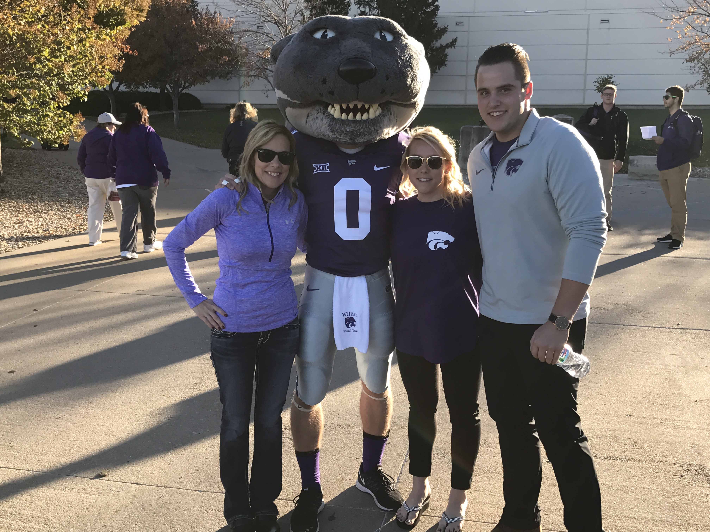
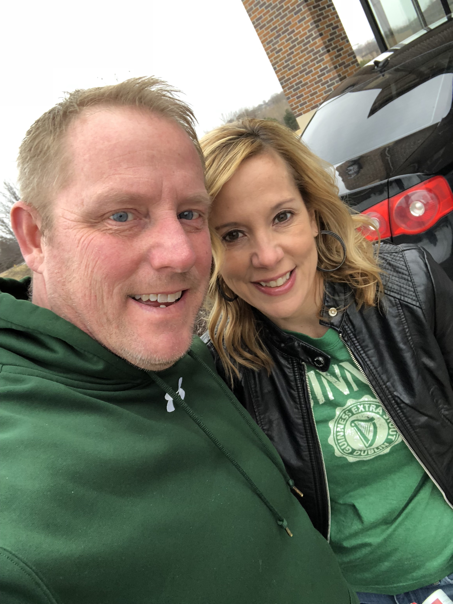
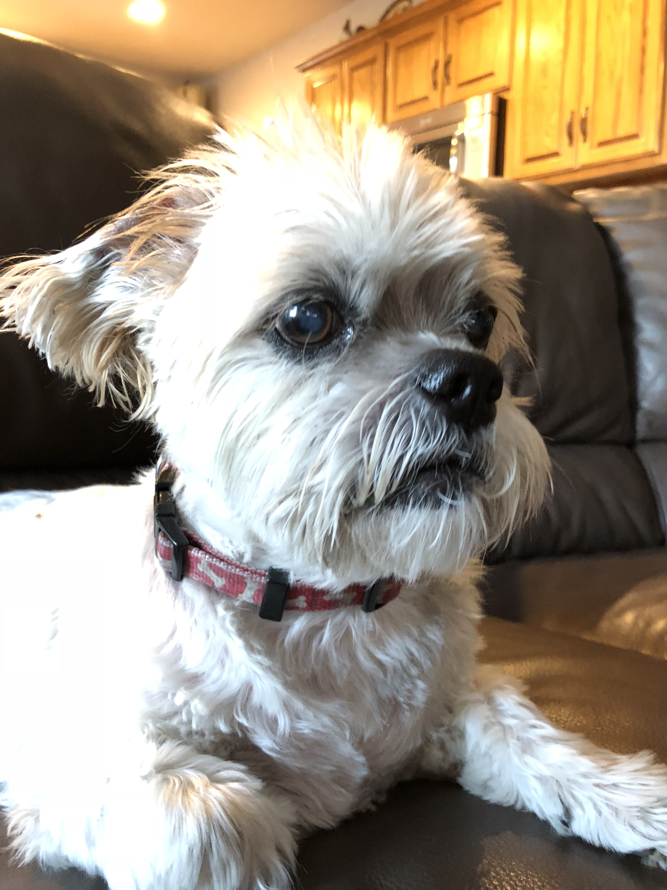
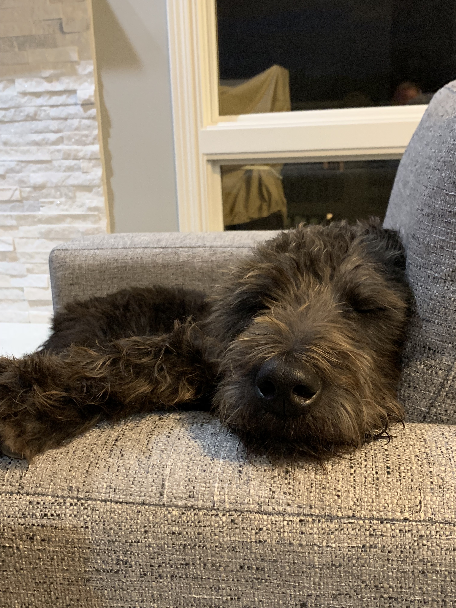
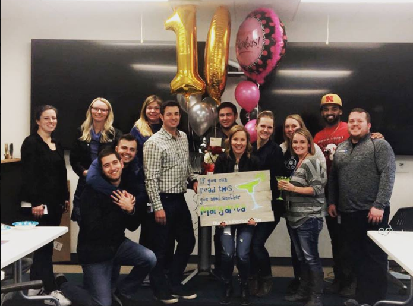
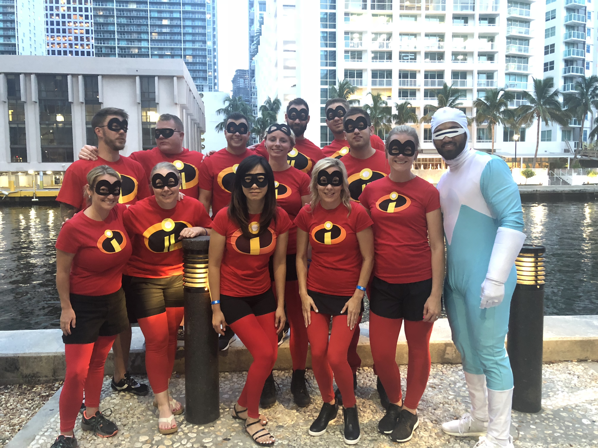
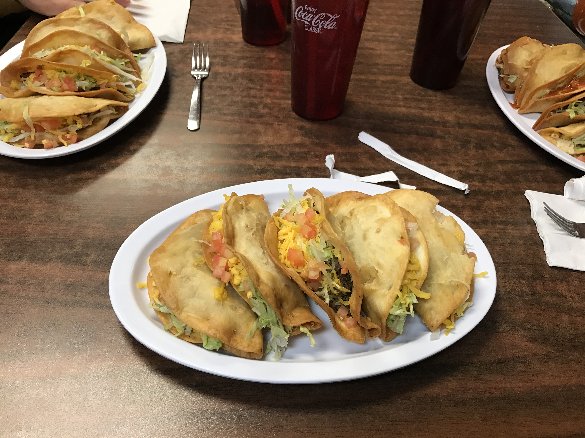
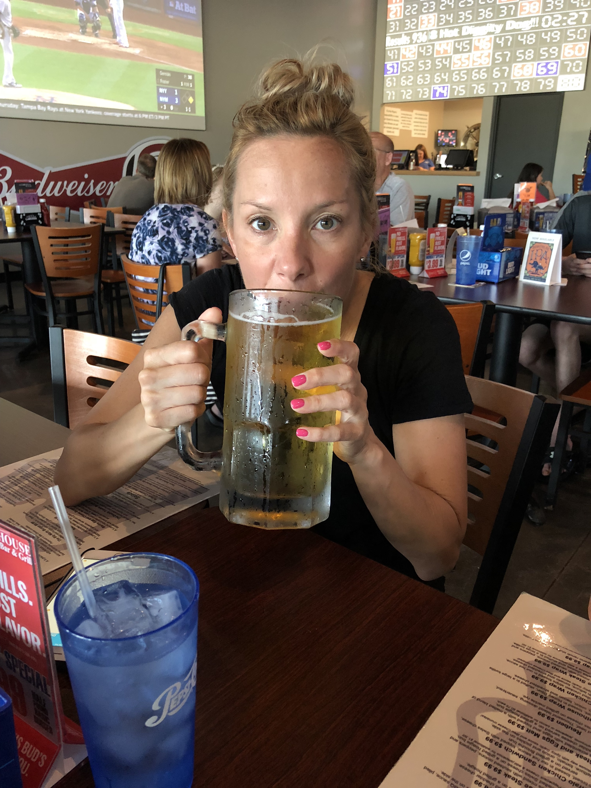
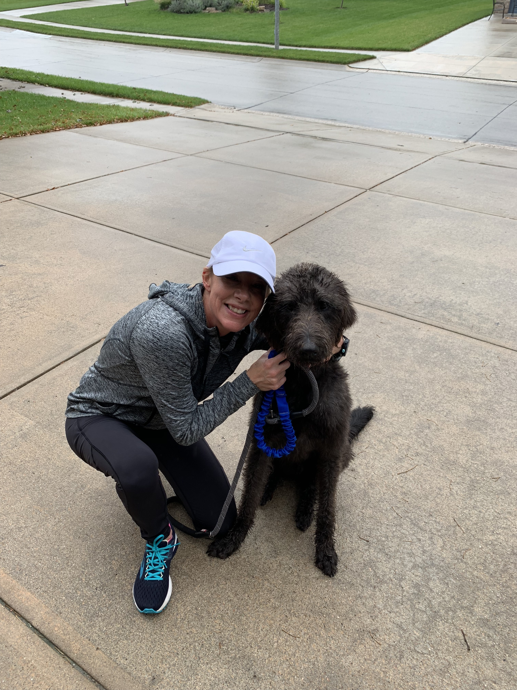
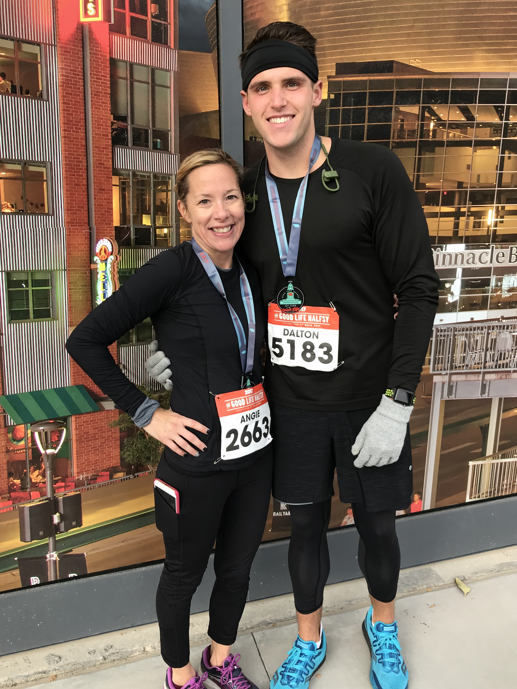

Angie grew up in Marysville, KS, which is also known as Black Squirrel City. Marysville inherrited this name due to the large amount of black squirrels in the city. The population of Mayrsville is approximately around 4,000 people but the black squirrel population is probably double that. Marysville has always been known as Black Squirrel City. The folklore was that in the early 1900’s a carnival came to town, and the carnival brought two Black Squirrels – one male and one female, and a small boy let them out and they’ve been there ever since.
After graduating high school, Angie was soon married the love of her life Craig Busch. Shortly after marriage their dauthter was born and four years later they had a son. Both of Angie's children are grown and are working or attending college. Not only is Angie a great mother to her children but she also loves her four legged pups. Yes, Angie thinks the world of Diddy (short for P-Diddy) who is a 21 lb Shih Tzu and Liam the Labradoodle who is a 80 lb ball crazy pup! Not only is Angie a wonderfule wife, mother, and pup mother but she also has an exciting career and is also an athalete.




Angie loves to spend time with her family. When she is not working or running, she loves hanging out and enjoying family time! Two of her favorite family members have four legs!


Angie is the Director of Global Product Compliance at LinkedIn. Just recently Angie celebrated her tenth year at LinkedIn. Angie not only loves her career but she also loves the people that she works with daily. In addition to her love for her peers, she also loves the mission of the company. LinkedIn's mission is simple: connect the world's professionals to make them more productive and successfull.




Angie loves to run and she truly enjoys her running partners! Liam the Labradoodle loves to run so he makes the perfect running partner. Someday in the near future, Liam and Anige are going to run a marathon together.
After running, Angie likes to enjoy a small beer and eat her favorite food. Yes, tacos are on the diet for elite athletes!
LinkedIn.com (opens in new window)